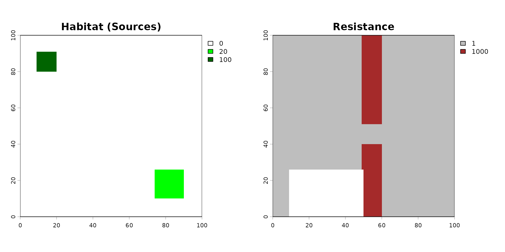
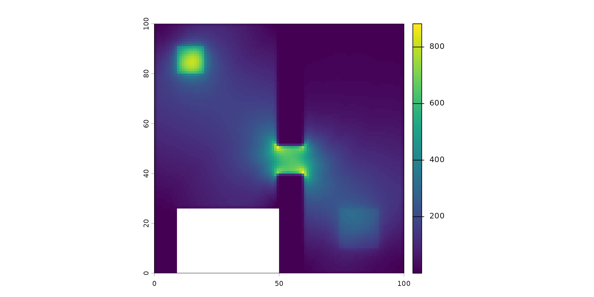
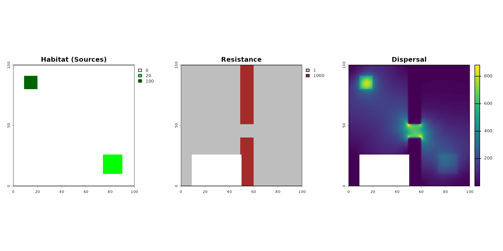

Using Julia Omniscape to run Landscape Connectivity
core_Omniscape_Connectivity.RmdIn this Notebook, we are going to see how we can use an external function of dispersal. Here we show the case of using Julia Omniscape function.
About Omniscape
The Core Concept: “Everywhere to Everywhere”
Standard connectivity models usually ask: “How do I get from Point A to Point B?”
Omniscape asks: “If individuals start everywhere and try to move in all directions within their home range, where do they go? Which paths get used the most?”
It applies Circuit Theory: it treats the landscape like an electrical circuit board.
- Individuals = Electrons (Current).
- Landscape difficulty = Resistance.
The Inputs (What you give the model)
To run Omniscape, you primarily need two raster maps and one parameter.
The Source Strength (Input Raster): This is your Population Density map (number of individuals/pixel). This tells the algorithm how much current (amperes) to inject at each pixel. Example: If a pixel has a value of 100 (100 individuals), the algorithm starts a large “flow” of movement from that spot. If a pixel has a value of 0 (empty ground), no movement starts there (but movement can still pass through it).
The Resistance Surface (Input Raster): The difficulty of moving through a pixel. Arbitrary resistance unit (Ohms), usually 1 to 100. Example: Low value (1): Easy to cross (e.g., preferred habitat), the “current” flows easily here. High value (100): Hard to cross (e.g., a wall, water, road), the “current” is blocked and tries to find a way around. Infinite (NA): absolute barrier, no flow possible.
The Radius (Parameter): The dispersal distance or home range (in pixels). The maximum distance an individual is likely to travel. The algorithm solves the connectivity problem within this moving window.
About Units of Source, Resistance and Radius
-
Source: relative capacity or suitability (usually
weight_globalorweight_foragingis the internalocsge_species_dictdataset). For instance:
- Value 10 (Core habitat): A dense, undisturbed forest for a fox. It generates a massive amount of dispersing individuals.
- Value 2 (Poor habitat): A small, degraded woodlot. It emits very few individuals.
- Value 0 or NA (Non-habitat): A parking lot. It emits absolutely no individuals (though they might still walk across it if the resistance allows it).
- Resistance: Relative friction cost. The absolute minimum is 1 (perfect, frictionless movement). It can never be 0 or negative. Effectively exponential/logarithmic. For instance:
- Value 1 (Optimal): A continuous forest. The animal moves freely.
- Value 10 (Sub-optimal): A tall grassland. The animal can cross it, but it takes more energy, so it will prefer the forest if it’s nearby.
- Value 100 (Hostile): A plowed agricultural field. The animal will actively avoid it and will only cross it if there is absolutely no other choice to reach the next habitat.
- Value 1000 or 10000 (Absolute Barrier): A fenced highway or an urban center. The cost is so high that the model will force the animal to take a massive detour (e.g., walking 50 pixels out of the way through 1 resistance rather than crossing a single pixel of 1000).
Exponential law for resistance
When we build resistance map, for instance from the internal
ocsge_species_dict dataset which provides resistance values
that scale sharply, we have to transform the weight factor
set in 0-10 to a log-scale function. Indeedn, if an optimal
habitat is
and the worst barrier is only
,
Omniscape will barely notice the barrier and will simulate
animals walking almost in straight lines!
A good practice would is to convert the linear scale
to
in an exponential scale
to
(e.g. 10^( (log10(1000) / 10) * x ).
The Algorithm
The algorithm is a circular window (defined by the Radius) sliding over the landscape map.
The Outputs
The most important result is the Cumulative Current Map.
Cumulative Current (Output Raster): the total flow of individuals passing through a pixel, coming from all possible directions within the radius. It a Probability of movement (or Flow Intensity). Example: A high Value for a pixel is a “highway” or a “bottleneck”. A huge number of individuals pass through this spot. This could be because it’s a great habitat, or because it’s the only path between two barriers. In
spacemodRcontext: If this area is contaminated, a large portion of the population will be exposed here because they all pass through it. A low value for a pixel means that few individuals visit this spot. Either it is hard to reach (surrounded by barriers), or the population source nearby is zero.Flow Potential (Optional Output): represents how the landscape would look if resistance was 1 everywhere (perfectly flat). It shows what the flow would be based only on the population density and geometry, ignoring the landscape barriers.
Normalized Current (Optional Output): represents the
Cumulative Current / Flow Potential. This highlights “pinch points.”:>1flow is higher than expected, the landscape is funneling individuals here (bottleneck effect).< 1: flow is lower than expected, the landscape is blocking movement here.
Units of the output “Cumulative Current Map”
- Score = 0.01 (Cold zones): Either an impassable barrier where nothing goes, or a massive, uniform optimal habitat where movement is so diffuse that it doesn’t concentrate anywhere.
- Score = 50.0 (Hot zones): A critical bottleneck. For instance, a narrow strip of trees between two large fields, or a single bridge over a river. All the “dispersal flow” is forced to squeeze through this specific pixel.
For spacemodR:
You provide the map of where the animals live (Abundance) and how hard it is to move (Resistance).
The algorithm simulates the movement of every individual in every direction.
You get a map showing where the animals go. A pixel with high current means “many animals pass here,” making it a critical zone for contaminant exposure.
Then using spacemodR::transfer, we can compute the
exposure and diffusion of the contaminant in
population.
Example of habitat and resistance
# setup Matrix size
n_row <- 100
n_col <- 100
# MATRIX of habitat (Source Strength)
mat_habitat <- matrix(0, nrow = n_row, ncol = n_col)
mat_habitat[10:20, 10:20] <- 100
mat_habitat[75:90, 75:90] <- 20
rast_habitat <- terra::rast(mat_habitat)
names(rast_habitat) <- "population"
# MATRICE Of RESISTANCE
mat_resistance <- matrix(1, nrow = n_row, ncol = n_col)
mat_resistance[, 50:60] <- 1000
mat_resistance[50:60, 50:60] <- 1
mat_resistance[75:100, 10:50] <- NA
rast_resistance <- terra::rast(mat_resistance)
names(rast_resistance) <- "resistance"
# SAVE RASTER FILE
terra::writeRaster(rast_habitat, "inst/extdata/example_habitat.tif", overwrite = TRUE)
terra::writeRaster(rast_resistance, "inst/extdata/example_resistance.tif", overwrite = TRUE)
terra::writeRaster(rast_habitat, "julia_run/example_habitat.tif", overwrite = TRUE)
terra::writeRaster(rast_resistance, "julia_run/example_resistance.tif", overwrite = TRUE)
# VIZUALIZE
par(mfrow = c(1, 2))
terra::plot(rast_habitat, main = "Habitat (Sources)", col = c("white", "green", "darkgreen"))
terra::plot(rast_resistance, main = "Resistance", col = c("grey", "brown"))
Then the code to compute the dispersal. It can be very long to compute…
Radius is in Pixel. To convert it into a distance of a dispersal kernel, you have to convert radius: for instance, if 1 pixel = x meter, then for a dispersal radius of , the radius provided is .
## USE DOCKER IMAGE TO RUN THIS
dispersed_map <- compute_dispersal(
x = rast_habitat,
method = "omniscape",
options = list(
resistance = rast_resistance,
radius = 25 # small radius for this little matrix
)
)
plot(dispersed_map)
This map shows the Cumulative Current.
- It represents the probability of flow or the intensity of movement through the landscape. It highlights ecological corridors and bottlenecks.
- Unit: It is unitless (technically “Amperes” in circuit theory). It is a relative score of connectivity.
- Scale nature: It is highly variable and depends on the landscape’s shape. It is not strictly linear or exponential; it’s a spatial accumulation.
- Examples:
- Score = 0.01 (Cold zones): Either an impassable barrier where nothing goes, or a massive, uniform optimal habitat where movement is so diffuse that it doesn’t concentrate anywhere.
- Score = 50.0 (Hot zones): A critical bottleneck. For instance, a narrow strip of trees between two large fields, or a single bridge over a river. All the “dispersal flow” is forced to squeeze through this specific pixel.
Running the Dispersal Computation via Docker
Due to the complex system dependencies required by Omniscape (Julia,
GDAL, PROJ), it is common to encounter compilation errors in local R
sessions (like libcurl version conflicts). The most robust
workaround is to execute the computation inside an isolated Docker
container and retrieve the result as an .rds file.
We will use a dedicated folder named julia_run to store
our input rasters, the R script, and the final output.
1. Prepare the Workspace and Inputs
First, create the julia_run directory and export your
spatial data (rast_habitat and
rast_resistance) into it so the Docker container can access
them.
Note: Using terra::writeRaster is ideal here because
it allows you to pass clean, lightweight spatial files
(.tif) to the Docker container rather than
.rds objects, which can sometimes contain dead C++ pointers
depending on the terra version.
# Create the shared directory
dir.create("julia_run", showWarnings = FALSE)
# Save the raster inputs to this directory
terra::writeRaster(rast_habitat, "julia_run/habitat.tif", overwrite = TRUE)
terra::writeRaster(rast_resistance, "julia_run/resistance.tif", overwrite = TRUE)2. Prepare the R script (run_dispersal.R)
Save the following code inside the julia_run folder as
run_dispersal.R. This script is designed to accept
command-line arguments for the file paths and the radius.
You can look at the file in
julia_run/run_disperal.R.
2. Build the Docker image
In your terminal, navigate to the root directory of the
spacemodR package (where the Dockerfile is
located) and run the following command to build the image (this may take
a few minutes):
3. Run the container with argument
Now, execute the R script inside the container. We map our local
julia_run directory to /julia_run inside the container.
Notice how we pass the file paths and the radius
()
at the very end of the command:
docker run --rm \
-v "$(pwd)/julia_run:/julia_run" \
spacemodr Rscript /julia_run/run_dispersal.R \
/julia_run/example_habitat.tif \
/julia_run/example_resistance.tif \
150 \
dispersed_example_150Note: if you need interactive mode to debug, try:
docker run --rm -it -v "$(pwd)/julia_run:/julia_run" spacemodr bash
# check files exist then
ls -l /julia_run
# run Rscript command
Rscript /julia_run/run_dispersal.R /julia_run/example_habitat.tif /julia_run/example_resistance.tif 30 dispersed_example_30- Retrieve the Data
Once the Docker process is complete, the
dispersed_map.rds file will be waiting for you in your
local julia_run folder.
We can now see the pipeline effect:
par(mfrow = c(1, 3))
terra::plot(rast_habitat, main = "Habitat (Sources)", col = c("white", "green", "darkgreen"))
terra::plot(rast_resistance, main = "Resistance", col = c("grey", "brown"))
terra::plot(dispersed_map, main = "Dispersal",)